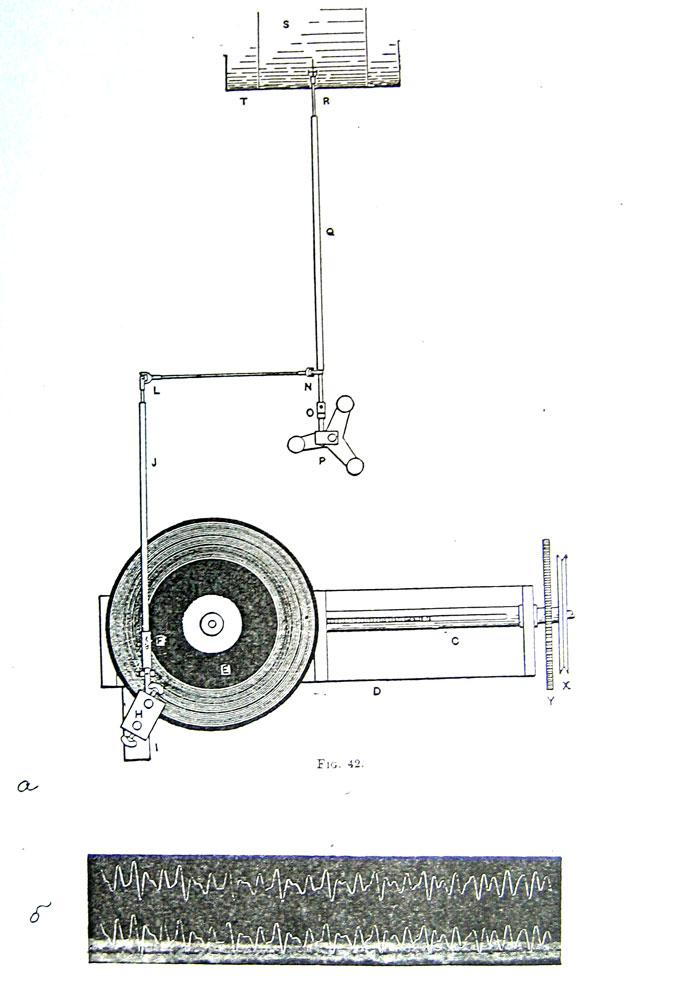

Рис. 59. Устройство для получения увеличенной кривой записи звуков на кимографе (а) и образец такой записи (б) (из [Scripture 1904]) Этот метод впервые давал возможность сопоставить восприятие звука, например, как долгого или краткого, высокого или низкого по тону, сильного или слабого, с его физическими характеристиками.
